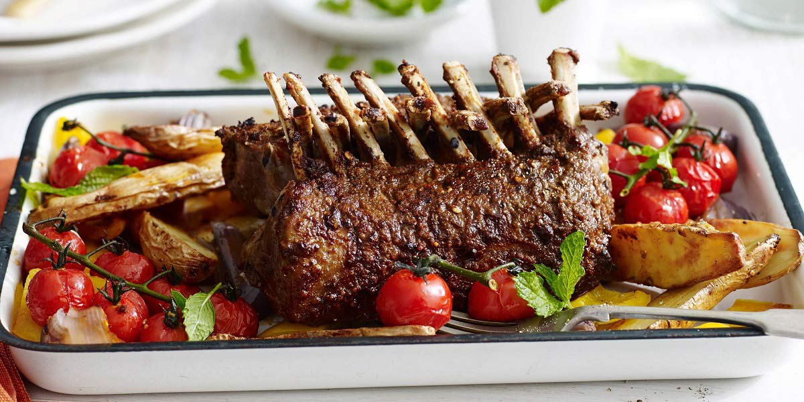

Crusted Rack of Lamb
Recipe Specification
Ingredients List
| Ingredients | Quantity |
|---|---|
| 8-rib Rack of Lamb(thin layer of fat) | 1kg |
| Garlic Clove | 3 Cloves |
| Parsley | 40g |
| Thyme | 15g |
| Rosemary | 10g |
| Salt | 1 tsp |
| Cracked Black Pepper | 1 tsp |
| Vegetable Oil | 40ml |
| Sliced White Bread | 2 slices |
Yield: 4 portions
Preparation
- Peel and crush garlic cloves.
- Pick and finely chop parsley.
- Pick and finely chop thyme.
- Pick and finely chop rosemary.
- Wrap foil around each of the bones.
- Put bread, garlic, parsley, thyme, rosemary, half the salt, half the pepper and half the oil in a food processor. Blend into a crumb.
- Pre-heat oven to 180’C.
- Season the rack of lamb with the remaining salt and pepper.
Cooking Instructions
- Place a frying pan on a medium/high heat and add remaining vegetable oil.
- Seal rack of lamb in hot pan ensuring an even brown.
- Place rack of lamb in a baking tray and pat the topside with an even layer of the herb crust.
- Place in the oven and roast for 15 minutes. Check the core temperature with a meat thermometer and if the temperature is 54’C, the rack is medium-rare. Cook for a further 5 minutes for medium.
- leave to rest for 5 minutes and remove foil before carving and serving.

Serving Suggestions
Rack of lamb goes great with dauphinoise potatoes and a panache of vegetables.
Storing instructions
Allow roasted leg of lamb to cool to room temperature before putting in an air-tight container and placing in the refrigerator. Consume within 4 days of making it
Reheating Instructions
Place in the microwave for 2-3 minutes until piping hot.